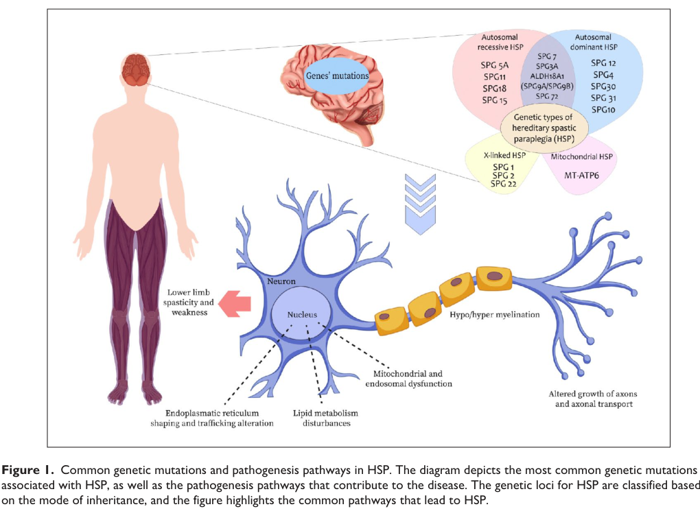

Hereditary spastic paraplegia (HSP) is a clinically and genetically heterogeneous group of inherited neurodegenerative disorders unified by length-dependent distal axonal degeneration of the corticospinal-tract upper motor neurons, maximal at the distal ends of the longest central nervous system axons in the thoracic spinal cord, with accompanying degeneration of the fasciculus gracilis (dorsal column) sensory fibers. More than 80 spastic paraplegia (SPG) genetic loci have been described, encoding proteins with diverse functions including axonal transport (SPAST/spastin microtubule severing), endoplasmic reticulum morphogenesis (ATL1/atlastin-1, SPAST/spastin, REEP1), mitochondrial quality control and oxidative phosphorylation (SPG7/paraplegin), and lipid/membrane and lysosomal-endosomal trafficking (SPG11/spatacsin). Despite this molecular diversity, the converging pathology is relatively selective corticospinal-tract axonopathy producing the shared clinical syndrome of progressive lower-limb spasticity and weakness with hyperreflexia and extensor plantar responses. HSP is divided clinically into "pure" (uncomplicated) forms, in which spasticity and weakness of the legs with subtle dorsal-column impairment and urinary urgency are the only features, and "complex" (complicated) forms, in which spastic paraplegia is accompanied by additional neurologic or systemic features such as thin corpus callosum, cognitive decline, peripheral neuropathy, ataxia, or distal amyotrophy.
Ask a research question about Hereditary Spastic Paraplegia. OpenScientist will conduct autonomous deep research using the Disorder Mechanisms Knowledge Base and PubMed literature (typically 10-30 minutes).
Do not include personal health information in your question. Questions and results are cached in your browser's local storage.
name: Hereditary Spastic Paraplegia
creation_date: "2026-06-08T00:00:00Z"
category: Mendelian
description: >
Hereditary spastic paraplegia (HSP) is a clinically and genetically
heterogeneous group of inherited neurodegenerative disorders unified by
length-dependent distal axonal degeneration of the corticospinal-tract upper
motor neurons, maximal at the distal ends of the longest central nervous
system axons in the thoracic spinal cord, with accompanying degeneration of
the fasciculus gracilis (dorsal column) sensory fibers. More than 80 spastic
paraplegia (SPG) genetic loci have been described, encoding proteins with
diverse functions including axonal transport (SPAST/spastin microtubule
severing), endoplasmic reticulum morphogenesis (ATL1/atlastin-1,
SPAST/spastin, REEP1), mitochondrial quality control and oxidative
phosphorylation (SPG7/paraplegin), and lipid/membrane and lysosomal-endosomal
trafficking (SPG11/spatacsin). Despite this molecular diversity, the converging
pathology is relatively selective corticospinal-tract axonopathy producing the
shared clinical syndrome of progressive lower-limb spasticity and weakness with
hyperreflexia and extensor plantar responses. HSP is divided clinically into
"pure" (uncomplicated) forms, in which spasticity and weakness of the legs with
subtle dorsal-column impairment and urinary urgency are the only features, and
"complex" (complicated) forms, in which spastic paraplegia is accompanied by
additional neurologic or systemic features such as thin corpus callosum,
cognitive decline, peripheral neuropathy, ataxia, or distal amyotrophy.
disease_term:
preferred_term: hereditary spastic paraplegia
term:
id: MONDO:0019064
label: hereditary spastic paraplegia
references:
- reference: PMID:20301682
title: "Uncomplicated (Pure) Hereditary Spastic Paraplegia Overview."
tags:
- GeneReviews
- reference: PMID:20301339
title: "Spastic Paraplegia 4."
tags:
- GeneReviews
- reference: PMID:20301389
title: "Spastic Paraplegia 11."
tags:
- GeneReviews
- reference: PMID:20862796
title: "Spastic Paraplegia 3A."
tags:
- GeneReviews
has_subtypes:
- name: Pure HSP
display_name: Pure (Uncomplicated) Hereditary Spastic Paraplegia
description: >
Clinical classification in which lower-extremity spasticity and weakness,
with subtle lower-extremity dorsal-column (vibration sense) impairment and
urinary urgency, are the predominant or only manifestations. Affected
individuals typically have normal life expectancy and do not develop
significant upper-extremity, bulbar, or cognitive involvement. SPG4
(SPAST) is the prototypical and single most common cause of pure autosomal
dominant HSP.
evidence:
- reference: PMID:23897027
reference_title: "Hereditary spastic paraplegia: clinico-pathologic features and emerging molecular mechanisms."
supports: SUPPORT
evidence_source: HUMAN_CLINICAL
snippet: "“uncomplicated” (characterized by lower extremity spasticity and weakness and subtle lower extremity dorsal column impairment)"
explanation: Defines the pure/uncomplicated HSP clinical category by its restricted feature set.
- name: Complex HSP
display_name: Complex (Complicated) Hereditary Spastic Paraplegia
description: >
Clinical classification in which spastic paraplegia is associated with
additional neurologic or systemic abnormalities, including dementia or
cognitive impairment, ataxia, intellectual disability, peripheral
neuropathy, distal wasting, loss of vision, epilepsy, ichthyosis, or thin
corpus callosum on neuroimaging. SPG11 (spatacsin) is a common autosomal
recessive cause of complex HSP. Correlation between the clinical
pure-versus-complex split and the underlying genetic type is imperfect,
and many genetic types can present as either form.
evidence:
- reference: PMID:23897027
reference_title: "Hereditary spastic paraplegia: clinico-pathologic features and emerging molecular mechanisms."
supports: SUPPORT
evidence_source: HUMAN_CLINICAL
snippet: "“complicated” (in which spastic paraplegia is associated with additional neurologic or systemic abnormalities including dementia, ataxia, mental retardation, neuropathy, distal wasting, loss of vision, epilepsy, or icthyosis"
explanation: Defines the complex/complicated HSP clinical category by the spectrum of additional features.
- reference: PMID:23897027
reference_title: "Hereditary spastic paraplegia: clinico-pathologic features and emerging molecular mechanisms."
supports: SUPPORT
evidence_source: HUMAN_CLINICAL
snippet: "There is imperfect correlation between clinical classification (“uncomplicated” versus “complicated”) and genetic types of HSP."
explanation: Notes that the pure-versus-complex clinical split does not map cleanly onto genetic subtype.
- name: SPG4
display_name: Spastic Paraplegia 4 (SPAST-HSP)
description: >
Autosomal dominant HSP caused by heterozygous pathogenic variants in SPAST,
encoding the microtubule-severing AAA ATPase spastin. SPG4 is the single
most common form of autosomal dominant HSP and is the prototype of pure
HSP, though dementia, ataxia, thin corpus callosum, and muscle wasting have
been reported. Onset is insidious, mostly in young adulthood, with
considerable intrafamilial variation.
genes:
- preferred_term: SPAST
term:
id: hgnc:11233
label: SPAST
inheritance:
- name: Autosomal Dominant (SPG4)
inheritance_term:
preferred_term: Autosomal dominant inheritance
term:
id: HP:0000006
label: Autosomal dominant inheritance
evidence:
- reference: PMID:20301339
reference_title: "Spastic Paraplegia 4."
supports: SUPPORT
evidence_source: HUMAN_CLINICAL
snippet: "Spastic paraplegia 4 (SPG4; also known as SPAST-HSP) \nis characterized by insidiously progressive bilateral lower-limb gait \nspasticity."
explanation: GeneReviews establishes SPG4/SPAST-HSP as a distinct autosomal dominant HSP subtype.
- name: SPG3A
display_name: Spastic Paraplegia 3A (ATL1-HSP)
description: >
Autosomal dominant HSP caused by heterozygous pathogenic variants in ATL1,
encoding atlastin-1, a dynamin-like GTPase that mediates homotypic fusion of
endoplasmic reticulum tubules. SPG3A is the most common cause of early
childhood-onset autosomal dominant HSP, with average age of onset around
four years and a relatively slow, often non-progressive course. Usually a
pure HSP, but complicated forms with axonal motor neuropathy and distal
amyotrophy (Silver syndrome phenotype) occur.
genes:
- preferred_term: ATL1
term:
id: hgnc:11231
label: ATL1
inheritance:
- name: Autosomal Dominant (SPG3A)
inheritance_term:
preferred_term: Autosomal dominant inheritance
term:
id: HP:0000006
label: Autosomal dominant inheritance
evidence:
- reference: PMID:20862796
reference_title: "Spastic Paraplegia 3A."
supports: SUPPORT
evidence_source: HUMAN_CLINICAL
snippet: "Spastic paraplegia 3A (SPG3A; also known as ATL1-HSP) \nis characterized by progressive bilateral and mostly symmetric spasticity and \nweakness of the legs."
explanation: GeneReviews establishes SPG3A/ATL1-HSP as a distinct autosomal dominant HSP subtype.
- reference: PMID:20862796
reference_title: "Spastic Paraplegia 3A."
supports: SUPPORT
evidence_source: HUMAN_CLINICAL
snippet: "The average age of onset is four years. More \nthan 80% of reported individuals manifest spastic gait before the end of the \nfirst decade of life."
explanation: Documents the characteristic early-childhood onset distinguishing SPG3A.
- name: SPG7
display_name: Spastic Paraplegia 7 (SPG7/paraplegin)
description: >
Most commonly autosomal recessive HSP caused by biallelic pathogenic
variants in SPG7, encoding paraplegin, a nuclear-encoded mitochondrial
metalloprotease (m-AAA protease) of the inner mitochondrial membrane.
SPG7-HSP frequently presents as complex HSP with cerebellar ataxia,
ophthalmoplegia/ptosis, optic atrophy, and mitochondrial cytopathy on
muscle biopsy, reflecting oxidative-phosphorylation impairment, but pure
forms also occur. Some heterozygous SPG7 variants have been associated with
dominantly transmitted disease.
genes:
- preferred_term: SPG7
term:
id: hgnc:11237
label: SPG7
inheritance:
- name: Autosomal Recessive (SPG7)
inheritance_term:
preferred_term: Autosomal recessive inheritance
term:
id: HP:0000007
label: Autosomal recessive inheritance
evidence:
- reference: PMID:9635427
reference_title: "Spastic paraplegia and OXPHOS impairment caused by mutations in paraplegin, a nuclear-encoded mitochondrial metalloprotease."
supports: SUPPORT
evidence_source: HUMAN_CLINICAL
snippet: "We found that patients from a chromosome 16q24.3-linked HSP family are homozygous \nfor a 9.5 kb deletion involving a gene encoding a novel protein, named \nParaplegin."
explanation: Original identification of recessive SPG7 caused by biallelic paraplegin mutations.
- reference: PMID:23897027
reference_title: "Hereditary spastic paraplegia: clinico-pathologic features and emerging molecular mechanisms."
supports: SUPPORT
evidence_source: HUMAN_CLINICAL
snippet: "SPG7 HSP was originally described as an autosomal recessive disorder due to homozygous or compound heterozygous SPG7/paraplegin gene mutations."
explanation: Confirms SPG7 as predominantly autosomal recessive HSP.
- name: SPG11
display_name: Spastic Paraplegia 11 (SPG11/spatacsin)
description: >
Autosomal recessive complex HSP caused by biallelic pathogenic variants in
SPG11, encoding spatacsin. SPG11 is one of the most common forms of
autosomal recessive HSP and is characteristically associated with thinning
of the corpus callosum, mild intellectual disability or progressive
cognitive decline, peripheral neuropathy, and pseudobulbar involvement.
Onset is usually in infancy or adolescence, and most affected individuals
become wheelchair-bound one or two decades after onset.
genes:
- preferred_term: SPG11
term:
id: hgnc:11226
label: SPG11
inheritance:
- name: Autosomal Recessive (SPG11)
inheritance_term:
preferred_term: Autosomal recessive inheritance
term:
id: HP:0000007
label: Autosomal recessive inheritance
evidence:
- reference: PMID:20301389
reference_title: "Spastic Paraplegia 11."
supports: SUPPORT
evidence_source: HUMAN_CLINICAL
snippet: "Spastic paraplegia 11 (SPG11) is characterized by \nprogressive spasticity and weakness of the lower limbs frequently associated \nwith the following: mild intellectual disability with learning difficulties in \nchildhood and/or progressive cognitive decline; peripheral neuropathy; \npseudobulbar involvement; and increased reflexes in the upper limbs."
explanation: GeneReviews establishes SPG11 as a distinct complex autosomal recessive HSP subtype.
pathophysiology:
- name: Length-Dependent Corticospinal-Tract Axonal Degeneration
description: >
The unifying pathology of HSP is degeneration of the lateral corticospinal
tract axons, maximal at their distal ends in the thoracic spinal cord, with
accompanying degeneration of the fasciculus gracilis (dorsal column) sensory
fibers maximal in the cervico-medullary region. This pattern reflects a
selective vulnerability of the longest motor and sensory axons of the central
nervous system, a length-dependent distal axonopathy of the upper motor
neuron. The diverse molecular causes of HSP converge on this relatively
uniform corticospinal-tract degeneration, producing the shared clinical
syndrome of progressive lower-limb spasticity and weakness.
cell_types:
- preferred_term: Upper motor neuron (corticospinal tract)
term:
id: CL:0008048
label: upper motor neuron
- preferred_term: Betz upper motor neuron
term:
id: CL:4023052
label: Betz upper motor neuron
locations:
- preferred_term: Lateral corticospinal tract
term:
id: UBERON:0002589
label: lateral corticospinal tract
- preferred_term: Corticospinal tract
term:
id: UBERON:0002707
label: corticospinal tract
biological_processes:
- preferred_term: Neuron projection (axon) maintenance failure
term:
id: GO:1990535
label: neuron projection maintenance
modifier: DECREASED
downstream:
- target: Progressive Lower-Limb Spasticity and Weakness
evidence:
- reference: PMID:23897027
reference_title: "Hereditary spastic paraplegia: clinico-pathologic features and emerging molecular mechanisms."
supports: SUPPORT
evidence_source: HUMAN_CLINICAL
snippet: "Postmortem studies consistently identify degeneration of corticospinal tract \naxons (maximal in the thoracic spinal cord) and degeneration of fasciculus \ngracilis fibers (maximal in the cervico-medullary region)."
explanation: Establishes the consistent corticospinal-tract and dorsal-column degeneration that defines HSP neuropathology.
- reference: PMID:23897027
reference_title: "Hereditary spastic paraplegia: clinico-pathologic features and emerging molecular mechanisms."
supports: SUPPORT
evidence_source: HUMAN_CLINICAL
snippet: "HSP syndromes thus \nappear to involve motor-sensory axon degeneration affecting predominantly (but \nnot exclusively) the distal ends of long central nervous system (CNS) axons."
explanation: Supports the length-dependent distal axonopathy concept central to HSP pathogenesis.
- reference: PMID:33439395
reference_title: "Hereditary spastic paraplegia."
supports: SUPPORT
evidence_source: HUMAN_CLINICAL
snippet: "The most common neuropathological sign \nis the axonal degeneration involving the lateral corticospinal tracts in both \nthe cervical and thoracic spinal cord."
explanation: Independent review confirms lateral corticospinal-tract axonal degeneration as the dominant neuropathology.
- name: Spastin Microtubule-Severing Defect (SPG4)
description: >
Spastin, encoded by SPAST (SPG4), is a microtubule-severing AAA ATPase that
assembles into a hexameric ring and remodels neuronal microtubule arrays by
pulling the C-terminal tail of tubulin through its central pore to generate
a mechanical force that destabilizes the microtubule lattice. Pathogenic
SPAST variants impair this severing activity, disrupting the dynamic
microtubule cytoskeleton required for axonal transport and organelle
distribution in long corticospinal-tract axons.
cell_types:
- preferred_term: Upper motor neuron (corticospinal tract)
term:
id: CL:0008048
label: upper motor neuron
biological_processes:
- preferred_term: Microtubule severing
term:
id: GO:0051013
label: microtubule severing
modifier: DECREASED
- preferred_term: Axonal transport
term:
id: GO:0098930
label: axonal transport
modifier: DECREASED
downstream:
- target: Length-Dependent Corticospinal-Tract Axonal Degeneration
evidence:
- reference: PMID:18202664
reference_title: "Structural basis of microtubule severing by the hereditary spastic paraplegia protein spastin."
supports: SUPPORT
evidence_source: IN_VITRO
snippet: "Spastin, the most common locus for mutations in hereditary spastic paraplegias, \nand katanin are related microtubule-severing AAA ATPases"
explanation: Identifies spastin as a microtubule-severing AAA ATPase and the most common HSP locus.
- reference: PMID:18202664
reference_title: "Structural basis of microtubule severing by the hereditary spastic paraplegia protein spastin."
supports: SUPPORT
evidence_source: IN_VITRO
snippet: "our data support a model in which spastin pulls the C terminus of \ntubulin through its central pore, generating a mechanical force that \ndestabilizes tubulin-tubulin interactions within the microtubule lattice."
explanation: Defines the molecular mechanism of spastin-mediated microtubule severing disrupted in SPG4.
- name: Atlastin-1 ER Tubular Network Defect (SPG3A)
description: >
Atlastin-1, encoded by ATL1 (SPG3A), is a dynamin-like, integral-membrane
GTPase that mediates homotypic fusion of endoplasmic reticulum tubules and
is required for proper formation of the interconnected tubular ER network.
ATL1 pathogenic variants impair ER-tubule fusion and network formation;
because spastin, atlastin, REEP1, and reticulon-2 interact in shaping the
tubular ER, ER-shaping defects are proposed as a shared neuropathogenic
mechanism converging on corticospinal-tract axon degeneration.
cell_types:
- preferred_term: Upper motor neuron (corticospinal tract)
term:
id: CL:0008048
label: upper motor neuron
cellular_components:
- preferred_term: Endoplasmic reticulum tubular network
term:
id: GO:0071782
label: endoplasmic reticulum tubular network
biological_processes:
- preferred_term: Endoplasmic reticulum membrane fusion
term:
id: GO:0016320
label: endoplasmic reticulum membrane fusion
modifier: DECREASED
- preferred_term: Endoplasmic reticulum tubular network organization
term:
id: GO:0071786
label: endoplasmic reticulum tubular network organization
modifier: DECREASED
downstream:
- target: Length-Dependent Corticospinal-Tract Axonal Degeneration
evidence:
- reference: PMID:19665976
reference_title: "A class of dynamin-like GTPases involved in the generation of the tubular ER network."
supports: SUPPORT
evidence_source: IN_VITRO
snippet: "we show that mammalian atlastins, which are dynamin-like, \nintegral membrane GTPases, interact with the tubule-shaping proteins. The \natlastins localize to the tubular ER and are required for proper network \nformation in vivo and in vitro."
explanation: Establishes atlastin's role in forming the tubular ER network, disrupted in SPG3A.
- reference: PMID:19665976
reference_title: "A class of dynamin-like GTPases involved in the generation of the tubular ER network."
supports: SUPPORT
evidence_source: IN_VITRO
snippet: "Since atlastin-1 mutations cause a common form of hereditary spastic paraplegia, \nwe suggest ER-shaping defects as a neuropathogenic mechanism."
explanation: Directly links atlastin-1 mutations and HSP to ER-shaping defects as the proposed mechanism.
- name: Paraplegin Mitochondrial Quality-Control and OXPHOS Failure (SPG7)
description: >
Paraplegin, encoded by SPG7, is a nuclear-encoded mitochondrial
metalloprotease (m-AAA protease) embedded in the inner mitochondrial
membrane, where it maintains mitochondrial protein quality by degrading
damaged or unassembled respiratory-chain subunits. Loss of paraplegin
function impairs oxidative phosphorylation; SPG7 patient cells show
fragmented mitochondria, reduced mitochondrial mass and membrane potential,
impaired oxidative phosphorylation with reduced ATP, and increased
mitochondrial oxidative stress, providing a bioenergetic mechanism for
corticospinal-tract neurodegeneration.
cell_types:
- preferred_term: Upper motor neuron (corticospinal tract)
term:
id: CL:0008048
label: upper motor neuron
biological_processes:
- preferred_term: Mitochondrial protein quality control
term:
id: GO:0141164
label: mitochondrial protein quality control
modifier: DECREASED
- preferred_term: Oxidative phosphorylation
term:
id: GO:0006119
label: oxidative phosphorylation
modifier: DECREASED
downstream:
- target: Length-Dependent Corticospinal-Tract Axonal Degeneration
evidence:
- reference: PMID:9635427
reference_title: "Spastic paraplegia and OXPHOS impairment caused by mutations in paraplegin, a nuclear-encoded mitochondrial metalloprotease."
supports: SUPPORT
evidence_source: HUMAN_CLINICAL
snippet: "Analysis of muscle biopsies from two \npatients carrying Paraplegin mutations showed typical signs of mitochondrial \nOXPHOS defects, thus suggesting a mechanism for neurodegeneration in HSP-type \ndisorders."
explanation: Links paraplegin mutations to oxidative-phosphorylation defects as the neurodegenerative mechanism in SPG7.
- reference: PMID:32973427
reference_title: "Mitochondrial Function in Hereditary Spastic Paraplegia: Deficits in SPG7 but Not SPAST Patient-Derived Stem Cells."
supports: SUPPORT
evidence_source: IN_VITRO
snippet: "SPG7 \npatient cells had increased paraplegin expression, fragmented mitochondria with \nlow interconnectivity, reduced mitochondrial mass, decreased mitochondrial \nmembrane potential, reduced oxidative phosphorylation, reduced ATP content, \nincreased mitochondrial oxidative stress, and reduced cellular proliferation."
explanation: Patient-derived SPG7 cells show the mitochondrial dysfunction phenotype underlying neurodegeneration.
- reference: PMID:32973427
reference_title: "Mitochondrial Function in Hereditary Spastic Paraplegia: Deficits in SPG7 but Not SPAST Patient-Derived Stem Cells."
supports: SUPPORT
evidence_source: IN_VITRO
snippet: "Mitochondrial dysfunction was specific to SPG7 patient cells and not present in \nSPAST patient cells, which displayed mitochondrial functions similar to control \ncells."
explanation: Demonstrates genotype-specific mitochondrial pathology, distinguishing the SPG7 mechanism from SPG4/SPAST.
- name: Progressive Lower-Limb Spasticity and Weakness
description: >
The convergent corticospinal-tract axonopathy produces the cardinal clinical
syndrome: insidiously progressive bilateral lower-limb spasticity and
weakness with hyperreflexia, crossed adductor signs, and extensor plantar
(Babinski) responses. Spasticity is greatest in hamstring, quadriceps,
adductor, and gastrocnemius-soleus muscles; weakness is most prominent in
iliopsoas, hamstring, and tibialis anterior. This is the shared functional
consequence of all genetic forms of HSP.
biological_processes:
- preferred_term: Neuron projection (axon) maintenance failure
term:
id: GO:1990535
label: neuron projection maintenance
modifier: DECREASED
evidence:
- reference: PMID:23897027
reference_title: "Hereditary spastic paraplegia: clinico-pathologic features and emerging molecular mechanisms."
supports: SUPPORT
evidence_source: HUMAN_CLINICAL
snippet: "Hypperreflexia, crossed adductor signs, extensor plantar responses are typically present"
explanation: Documents the pyramidal signs that result from corticospinal-tract degeneration.
phenotypes:
- category: Neurologic
name: Spastic Paraplegia
description: >
Progressive bilateral lower-limb gait spasticity is the cardinal and
defining feature of HSP, resulting from corticospinal-tract degeneration.
phenotype_term:
preferred_term: Spastic paraplegia
term:
id: HP:0001258
label: Spastic paraplegia
clinical_course: PROGRESSIVE
frequency: VERY_FREQUENT
evidence:
- reference: PMID:20301339
reference_title: "Spastic Paraplegia 4."
supports: SUPPORT
evidence_source: HUMAN_CLINICAL
snippet: "Spastic paraplegia 4 (SPG4; also known as SPAST-HSP) \nis characterized by insidiously progressive bilateral lower-limb gait \nspasticity."
explanation: Insidiously progressive lower-limb gait spasticity is the defining clinical feature.
- category: Neurologic
name: Lower Limb Spasticity
description: >
Increased muscle tone in the legs, greatest in hamstring, quadriceps,
adductor, and gastrocnemius-soleus muscles.
phenotype_term:
preferred_term: Lower limb spasticity
term:
id: HP:0002061
label: Lower limb spasticity
frequency: VERY_FREQUENT
evidence:
- reference: PMID:33439395
reference_title: "Hereditary spastic paraplegia."
supports: SUPPORT
evidence_source: HUMAN_CLINICAL
snippet: "Hereditary spastic paraplegias (HSPs) are a group of neurodegenerative disorders \nwhich involve the corticospinal tracts and present with distinct spasticity and \nweakness of the lower extremities."
explanation: Lower-extremity spasticity is a presenting hallmark of HSP.
- category: Neurologic
name: Lower Limb Weakness
description: >
Weakness of the legs, most prominent in iliopsoas, hamstring, and tibialis
anterior muscles; more than 50% of affected individuals have some leg
weakness.
phenotype_term:
preferred_term: Lower limb muscle weakness
term:
id: HP:0007340
label: Lower limb muscle weakness
frequency: FREQUENT
evidence:
- reference: PMID:20301339
reference_title: "Spastic Paraplegia 4."
supports: SUPPORT
evidence_source: HUMAN_CLINICAL
snippet: "More \nthan 50% of affected individuals have some weakness in the legs"
explanation: Quantifies lower-limb weakness as frequent in SPAST-HSP.
- category: Neurologic
name: Hyperreflexia
description: >
Brisk deep-tendon reflexes in the lower limbs (and frequently mild
upper-limb hyperreflexia) reflecting upper-motor-neuron involvement.
phenotype_term:
preferred_term: Hyperreflexia
term:
id: HP:0001347
label: Hyperreflexia
frequency: VERY_FREQUENT
evidence:
- reference: PMID:23897027
reference_title: "Hereditary spastic paraplegia: clinico-pathologic features and emerging molecular mechanisms."
supports: SUPPORT
evidence_source: HUMAN_CLINICAL
snippet: "Mild upper extremity hyperreflexia, without increased muscle tone, weakness, or impaired dexterity is common in subjects with uncomplicated HSP."
explanation: Hyperreflexia, including upper-limb hyperreflexia, is a typical pyramidal sign in HSP.
- category: Neurologic
name: Extensor Plantar Responses
description: >
Babinski sign (extensor plantar response) is a typical upper-motor-neuron
sign in HSP.
phenotype_term:
preferred_term: Babinski sign
term:
id: HP:0003487
label: Babinski sign
frequency: FREQUENT
evidence:
- reference: PMID:23897027
reference_title: "Hereditary spastic paraplegia: clinico-pathologic features and emerging molecular mechanisms."
supports: SUPPORT
evidence_source: HUMAN_CLINICAL
snippet: "extensor plantar responses are typically present (plantar responses may occasionally be absent)."
explanation: Extensor plantar responses are typically present, reflecting corticospinal-tract dysfunction.
- category: Neurologic
name: Impaired Vibration Sense
description: >
Mild impairment of vibration sensation at the ankles/toes, reflecting
subtle dorsal-column (fasciculus gracilis) involvement.
phenotype_term:
preferred_term: Impaired vibration sensation at ankles
term:
id: HP:0006938
label: Impaired vibration sensation at ankles
frequency: FREQUENT
evidence:
- reference: PMID:20301339
reference_title: "Spastic Paraplegia 4."
supports: SUPPORT
evidence_source: HUMAN_CLINICAL
snippet: "More \nthan 50% of affected individuals have some weakness in the legs and impaired vibration sense at the ankles."
explanation: Impaired ankle vibration sense reflects the dorsal-column involvement characteristic of HSP.
- category: Genitourinary
name: Urinary Urgency
description: >
Sphincter disturbances, particularly urinary urgency from neurogenic
bladder, are very common and occasionally a presenting feature.
phenotype_term:
preferred_term: Urinary urgency
term:
id: HP:0000012
label: Urinary urgency
frequency: FREQUENT
evidence:
- reference: PMID:20301339
reference_title: "Spastic Paraplegia 4."
supports: SUPPORT
evidence_source: HUMAN_CLINICAL
snippet: "Sphincter disturbances are very \ncommon."
explanation: Sphincter disturbances (urinary urgency) are very common in SPAST-HSP.
- category: Neurologic
name: Thin Corpus Callosum
description: >
Thinning of the corpus callosum on brain MRI is a characteristic feature of
complex HSP, most strongly associated with SPG11 but also seen in SPG3A,
SPG4, SPG7, and others.
phenotype_term:
preferred_term: Thin corpus callosum
term:
id: HP:0033725
label: Thin corpus callosum
subtype: Complex HSP
frequency: OCCASIONAL
evidence:
- reference: PMID:20301389
reference_title: "Spastic Paraplegia 11."
supports: SUPPORT
evidence_source: HUMAN_CLINICAL
snippet: "characteristic brain MRI features that include thinning of the corpus callosum."
explanation: Thin corpus callosum is a characteristic neuroimaging feature of SPG11 complex HSP.
- category: Neurologic
name: Cognitive Impairment
description: >
Mild intellectual disability with learning difficulties in childhood and/or
progressive cognitive decline, characteristic of complex HSP, especially
SPG11.
phenotype_term:
preferred_term: Cognitive impairment
term:
id: HP:0100543
label: Cognitive impairment
subtype: Complex HSP
frequency: FREQUENT
evidence:
- reference: PMID:20301389
reference_title: "Spastic Paraplegia 11."
supports: SUPPORT
evidence_source: HUMAN_CLINICAL
snippet: "mild intellectual disability with learning difficulties in \nchildhood and/or progressive cognitive decline"
explanation: Cognitive impairment is a frequent complicating feature of SPG11 complex HSP.
- category: Neurologic
name: Peripheral Neuropathy
description: >
Peripheral (often axonal motor-sensory) neuropathy is a complicating feature
in more than a dozen genetic types of HSP, including SPG11 and a subset of
SPG3A.
phenotype_term:
preferred_term: Peripheral neuropathy
term:
id: HP:0009830
label: Peripheral neuropathy
subtype: Complex HSP
frequency: OCCASIONAL
evidence:
- reference: PMID:20301389
reference_title: "Spastic Paraplegia 11."
supports: SUPPORT
evidence_source: HUMAN_CLINICAL
snippet: "peripheral neuropathy"
explanation: Peripheral neuropathy is a recognized complicating feature of SPG11.
- category: Neurologic
name: Cerebellar Ataxia
description: >
Cerebellar signs including ataxia are a complicating feature of HSP,
frequent in SPG7 and reported in SPG11.
phenotype_term:
preferred_term: Ataxia
term:
id: HP:0001251
label: Ataxia
subtype: Complex HSP
frequency: OCCASIONAL
evidence:
- reference: PMID:23897027
reference_title: "Hereditary spastic paraplegia: clinico-pathologic features and emerging molecular mechanisms."
supports: SUPPORT
evidence_source: HUMAN_CLINICAL
snippet: "ataxia in SPG7 HSP"
explanation: Ataxia is a frequent complicating feature of SPG7 complex HSP.
- category: Musculoskeletal
name: Pes Cavus
description: >
High-arched foot deformity (pes cavus) is frequent in HSP, although it may
be absent even in clearly affected individuals.
phenotype_term:
preferred_term: Pes cavus
term:
id: HP:0001761
label: Pes cavus
frequency: OCCASIONAL
evidence:
- reference: PMID:23897027
reference_title: "Hereditary spastic paraplegia: clinico-pathologic features and emerging molecular mechanisms."
supports: SUPPORT
evidence_source: HUMAN_CLINICAL
snippet: "Although pes cavus is frequent in HSP, it may be absent even in clearly affected subjects."
explanation: Pes cavus is a frequent but variable skeletal feature of HSP.
- category: Neurologic
name: Distal Amyotrophy
description: >
Distal muscle wasting (lower-motor-neuron involvement) is common in several
genetic types of HSP, notably SPG10, SPG17 (Silver syndrome), and SPG20
(Troyer syndrome), and may occur in SPG11.
phenotype_term:
preferred_term: Distal amyotrophy
term:
id: HP:0003693
label: Distal amyotrophy
subtype: Complex HSP
frequency: OCCASIONAL
evidence:
- reference: PMID:23897027
reference_title: "Hereditary spastic paraplegia: clinico-pathologic features and emerging molecular mechanisms."
supports: SUPPORT
evidence_source: HUMAN_CLINICAL
snippet: "Lower motor neuron involvement, evident as distal muscle wasting is common in a many genetic types of HSP"
explanation: Distal amyotrophy reflects lower-motor-neuron involvement in several complex HSP types.
inheritance:
- name: Autosomal Dominant
inheritance_term:
preferred_term: Autosomal dominant inheritance
term:
id: HP:0000006
label: Autosomal dominant inheritance
description: >
Autosomal dominant HSP includes the most common forms SPG4 (SPAST) and
SPG3A (ATL1). Penetrance is age-dependent and may be high (80-90% in SPG4)
or as low as 70%.
evidence:
- reference: PMID:20301339
reference_title: "Spastic Paraplegia 4."
supports: SUPPORT
evidence_source: HUMAN_CLINICAL
snippet: "SPAST-HSP is inherited in an autosomal dominant manner with \nage-related, nearly complete penetrance"
explanation: Establishes autosomal dominant inheritance with age-related penetrance for the most common HSP form.
- reference: PMID:23897027
reference_title: "Hereditary spastic paraplegia: clinico-pathologic features and emerging molecular mechanisms."
supports: SUPPORT
evidence_source: HUMAN_CLINICAL
snippet: "Genetic penetrance in autosomal dominant HSP is age-dependent, may be high (80-90% in SPG4 HSP) or as low as 70%"
explanation: Quantifies the age-dependent penetrance of autosomal dominant HSP.
- name: Autosomal Recessive
inheritance_term:
preferred_term: Autosomal recessive inheritance
term:
id: HP:0000007
label: Autosomal recessive inheritance
description: >
Autosomal recessive HSP includes SPG7 (paraplegin) and SPG11 (spatacsin),
which usually present as complex HSP and require biallelic pathogenic
variants.
evidence:
- reference: PMID:20301389
reference_title: "Spastic Paraplegia 11."
supports: SUPPORT
evidence_source: HUMAN_CLINICAL
snippet: "SPG11 is inherited in an autosomal recessive manner."
explanation: Establishes autosomal recessive inheritance for the common complex HSP form SPG11.
genetic:
- name: SPAST
gene_term:
preferred_term: SPAST
term:
id: hgnc:11233
label: SPAST
subtype: SPG4
inheritance:
- name: Autosomal Dominant
inheritance_term:
preferred_term: Autosomal dominant inheritance
term:
id: HP:0000006
label: Autosomal dominant inheritance
evidence:
- reference: PMID:18202664
reference_title: "Structural basis of microtubule severing by the hereditary spastic paraplegia protein spastin."
supports: SUPPORT
evidence_source: IN_VITRO
snippet: "Spastin, the most common locus for mutations in hereditary spastic paraplegias"
explanation: SPAST/spastin is the most common HSP gene, encoding a microtubule-severing ATPase.
- name: ATL1
gene_term:
preferred_term: ATL1
term:
id: hgnc:11231
label: ATL1
subtype: SPG3A
inheritance:
- name: Autosomal Dominant
inheritance_term:
preferred_term: Autosomal dominant inheritance
term:
id: HP:0000006
label: Autosomal dominant inheritance
evidence:
- reference: PMID:20862796
reference_title: "Spastic Paraplegia 3A."
supports: SUPPORT
evidence_source: HUMAN_CLINICAL
snippet: "The diagnosis of ATL1-HSP is established in a proband with \nsuggestive findings and almost exclusively a heterozygous pathogenic variant in \nATL1 identified by molecular genetic testing."
explanation: ATL1 heterozygous variants cause SPG3A, the common early-childhood autosomal dominant HSP.
- name: SPG7
gene_term:
preferred_term: SPG7
term:
id: hgnc:11237
label: SPG7
subtype: SPG7
inheritance:
- name: Autosomal Recessive
inheritance_term:
preferred_term: Autosomal recessive inheritance
term:
id: HP:0000007
label: Autosomal recessive inheritance
evidence:
- reference: PMID:9635427
reference_title: "Spastic paraplegia and OXPHOS impairment caused by mutations in paraplegin, a nuclear-encoded mitochondrial metalloprotease."
supports: SUPPORT
evidence_source: HUMAN_CLINICAL
snippet: "Two additional Paraplegin mutations, both resulting in a frameshift, \nwere found in a complicated and in a pure form of HSP."
explanation: SPG7/paraplegin mutations cause both pure and complicated recessive HSP.
- name: SPG11
gene_term:
preferred_term: SPG11
term:
id: hgnc:11226
label: SPG11
subtype: SPG11
inheritance:
- name: Autosomal Recessive
inheritance_term:
preferred_term: Autosomal recessive inheritance
term:
id: HP:0000007
label: Autosomal recessive inheritance
evidence:
- reference: PMID:20301389
reference_title: "Spastic Paraplegia 11."
supports: SUPPORT
evidence_source: HUMAN_CLINICAL
snippet: "The diagnosis of SPG11 is established in a proband with \ncharacteristic clinical and MRI findings and biallelic pathogenic variants in \nSPG11 identified on molecular genetic testing."
explanation: Biallelic SPG11 variants cause the common complex autosomal recessive HSP.
treatments:
- name: Antispastic Pharmacotherapy (Baclofen / Tizanidine)
description: >
Oral antispastic drugs, principally baclofen and tizanidine, are used to
reduce lower-limb spasticity. Treatment is symptomatic; no therapy prevents
the underlying axonal degeneration. Note: in SPG3A (ATL1-HSP), GeneReviews
advises avoiding dantrolene because it can induce irreversible weakness
adversely affecting mobility.
treatment_term:
preferred_term: Pharmacotherapy
term:
id: NCIT:C15986
label: Pharmacotherapy
therapeutic_agent:
- preferred_term: baclofen
term:
id: CHEBI:2972
label: baclofen
- preferred_term: tizanidine
term:
id: CHEBI:63629
label: tizanidine
therapeutic_modality: SMALL_MOLECULE
target_phenotypes:
- preferred_term: Lower limb spasticity
term:
id: HP:0002061
label: Lower limb spasticity
evidence:
- reference: PMID:20301339
reference_title: "Spastic Paraplegia 4."
supports: SUPPORT
evidence_source: HUMAN_CLINICAL
snippet: "Antispastic drugs for leg spasticity"
explanation: GeneReviews recommends antispastic drugs for leg spasticity in HSP.
- reference: PMID:20862796
reference_title: "Spastic Paraplegia 3A."
supports: SUPPORT
evidence_source: HUMAN_CLINICAL
snippet: "Medical \ntreatment of spasticity may begin with oral baclofen or tizanidine"
explanation: Identifies oral baclofen or tizanidine as first-line antispastic agents.
- name: Botulinum Toxin and Intrathecal Baclofen
description: >
For severe, disabling spasticity when oral drugs are ineffective or not
tolerated, focal chemodenervation with botulinum toxin and intrathecal
baclofen via implanted pump are considered.
treatment_term:
preferred_term: Pharmacotherapy
term:
id: NCIT:C15986
label: Pharmacotherapy
therapeutic_agent:
- preferred_term: botulinum toxin type A
term:
id: CHEBI:3160
label: Botulinum toxin type A
- preferred_term: baclofen
term:
id: CHEBI:2972
label: baclofen
target_phenotypes:
- preferred_term: Lower limb spasticity
term:
id: HP:0002061
label: Lower limb spasticity
evidence:
- reference: PMID:20301339
reference_title: "Spastic Paraplegia 4."
supports: SUPPORT
evidence_source: HUMAN_CLINICAL
snippet: "Consideration of botulinum \ntoxin and intrathecal baclofen when oral drugs are ineffective and spasticity is \nsevere and disabling."
explanation: Botulinum toxin and intrathecal baclofen are reserved for severe spasticity refractory to oral drugs.
- name: Physical Therapy
description: >
Regular physiotherapy to stretch spastic muscles and prevent contractures is
a mainstay of HSP management, combined with management of foot deformities
and ankle-foot orthoses for distal weakness.
treatment_term:
preferred_term: physical therapy
term:
id: MAXO:0000011
label: physical therapy
therapeutic_modality: BEHAVIORAL
evidence:
- reference: PMID:20301339
reference_title: "Spastic Paraplegia 4."
supports: SUPPORT
evidence_source: HUMAN_CLINICAL
snippet: "regular physiotherapy \nto stretch spastic muscles and prevent contractures."
explanation: Regular physiotherapy to stretch spastic muscles and prevent contractures is standard HSP management.
- name: Anticholinergic Therapy for Urinary Urgency
description: >
Anticholinergic antispasmodic drugs such as oxybutynin are used to treat
urinary urgency from neurogenic bladder, with urodynamic evaluation to guide
treatment.
treatment_term:
preferred_term: Pharmacotherapy
term:
id: NCIT:C15986
label: Pharmacotherapy
therapeutic_agent:
- preferred_term: oxybutynin
term:
id: CHEBI:7856
label: oxybutynin
therapeutic_modality: SMALL_MOLECULE
target_phenotypes:
- preferred_term: Urinary urgency
term:
id: HP:0000012
label: Urinary urgency
evidence:
- reference: PMID:20301339
reference_title: "Spastic Paraplegia 4."
supports: SUPPORT
evidence_source: HUMAN_CLINICAL
snippet: "anticholinergic antispasmodic drugs for urinary urgency"
explanation: Anticholinergic antispasmodic drugs treat urinary urgency in HSP.
notes: >
HSP is defined and classified primarily by clinical and genetic features rather
than neuropathology; more than 80 SPG loci are now recognized. The pure-versus-
complex clinical split correlates imperfectly with genetic type, and several
genes (e.g. SPG7) may present as either autosomal dominant or autosomal
recessive disease. Drug-safety note from GeneReviews (SPG3A/ATL1-HSP):
dantrolene should be avoided as it can induce irreversible weakness adversely
affecting mobility.
Question: You are an expert researcher providing comprehensive, well-cited information.
Provide detailed information focusing on: 1. Key concepts and definitions with current understanding 2. Recent developments and latest research (prioritize 2023-2024 sources) 3. Current applications and real-world implementations 4. Expert opinions and analysis from authoritative sources 5. Relevant statistics and data from recent studies
Format as a comprehensive research report with proper citations. Include URLs and publication dates where available. Always prioritize recent, authoritative sources and provide specific citations for all major claims.
Please provide a comprehensive research report on Hereditary Spastic Paraplegia covering all of the disease characteristics listed below. This report will be used to populate a disease knowledge base entry. Be thorough and cite primary literature (PMID preferred) for all claims.
For each section, suggested databases/resources are listed. These are the first places you should search for information on each topic.
Search first: OMIM, Orphanet, ICD-10/ICD-11, MeSH, PubMed
Search first: PubMed, Cochrane Library, UpToDate, clinical guidelines, ClinVar, ClinGen, GWAS Catalog, PheGenI, CTD, CDC, WHO, epidemiological databases
Search first: PubMed, Cochrane Library, clinical trial databases, GWAS Catalog, gnomAD, WHO, CDC, nutrition databases
Search first: CTD, PubMed, PheGenI, GxE databases
Search first: HPO (Human Phenotype Ontology), OMIM, Orphanet, PubMed, clinicaltrials.gov, MedDRA, SNOMED CT, DECIPHER, LOINC
For each phenotype, provide: - Phenotype type: symptoms, clinical signs, physical manifestations, behavioral changes, or laboratory abnormalities
For symptoms/signs: HPO, OMIM, Orphanet, PubMed For behavioral changes: HPO, DSM, RDoC (Research Domain Criteria), PubMed For laboratory abnormalities: LOINC, SNOMED CT, LabTests Online, PubMed - Phenotype characteristics: Search first: OMIM, Orphanet, HPO, PubMed - Age of symptom onset (neonatal, childhood, adult-onset, late-onset) - Symptom severity (mild, moderate, severe, variable) - Symptom progression (stable, progressive, episodic, fluctuating) - Frequency among affected individuals (percentage or qualitative) - Quality of life impact: Effects on daily functioning and well-being (per-phenotype when possible) Search first: EQ-5D database, SF-36, WHO QOL databases, PubMed - Suggest HPO (Human Phenotype Ontology) terms for each phenotype
Search first: OMIM, ClinVar, HGMD, Ensembl, NCBI Gene
Search first: ENCODE, Roadmap Epigenomics, MethBase, DiseaseMeth
Search first: DECIPHER, ClinVar, ECARUCA, UCSC Genome Browser
Search first: CTD (Comparative Toxicogenomics Database), TOXNET, PubMed, EPA databases
Search first: CDC databases, WHO, PubMed, NHANES
Search first: NCBI Taxonomy, ViPR, BV-BRC, MicrobeDB, GIDEON
Search first: KEGG, Reactome, WikiPathways, PathBank, BioCyc
Search first: Gene Ontology (GO), Reactome, KEGG, PubMed
Search first: UniProt, PDB (Protein Data Bank), InterPro, Pfam, AlphaFold
Search first: KEGG, BioCyc, HMDB (Human Metabolome Database), BRENDA
Search first: ImmPort, Immunome Database, IEDB, Gene Ontology
Search first: PubMed, Gene Ontology, Reactome
Search first: BRENDA, UniProt, KEGG, OMIM, PubMed
Search first: ENCODE, Roadmap Epigenomics, MethBase, DiseaseMeth
For each mechanism, describe: - The causal chain from initial trigger to clinical manifestation - Which mechanisms are upstream vs downstream - What cell types and biological processes are involved - Suggest GO terms for biological processes and CL terms for cell types
Search first: Uberon, FMA (Foundational Model of Anatomy), OMIM, HPO, ICD-11, MeSH, SNOMED CT
Search first: Uberon, Human Protein Atlas, Cell Ontology, Human Cell Atlas, CellMarker, PanglaoDB
Search first: Gene Ontology (Cellular Component), UniProt, Human Protein Atlas
Search first: OMIM, Orphanet, HPO, PubMed
Search first: Disease registries, longitudinal cohort databases, natural history studies, PubMed, Orphanet, OMIM
Search first: Orphanet, CDC, WHO, GBD (Global Burden of Disease), national registries, SEER, disease registries
Search first: GTR (Genetic Testing Registry), GeneReviews, ClinGen
For each treatment, suggest MAXO (Medical Action Ontology) terms where applicable.
Search first: CDC vaccine schedules, WHO immunization, FDA vaccine database
Search first: CDC, WHO, behavioral intervention databases, Cochrane Library
Search first: NSGC resources, ACMG guidelines, GeneReviews
Search first: Clinical guidelines, FDA approvals, PubMed
Search first: NCBI Taxonomy
Search first: VBO (Vertebrate Breed Ontology)
Search first: NCBI Gene
Structure your response as a comprehensive narrative organized by the sections above. For each section, provide: - Factual content with specific details (numbers, percentages, gene names, variant nomenclature) - Ontology term suggestions (HPO, GO, CL, UBERON, CHEBI, MAXO, MONDO) where applicable - Evidence citations with PMIDs - Direct quotes from abstracts to support key claims - Clear indication when information is not available or not applicable for this disease
This report will be used to populate a disease knowledge base entry with: - Pathophysiology descriptions with causal chains - Gene/protein annotations (HGNC, GO terms) - Phenotype associations (HP terms) with frequencies - Cell type involvement (CL terms) - Anatomical locations (UBERON terms) - Chemical entities (CHEBI terms) - Treatment annotations (MAXO terms) - Evidence items with PMIDs and exact abstract quotes - Epidemiology, prognosis, diagnostic, and prevention information - Animal model descriptions with phenotype recapitulation details
Figure (evidence): A 2024 review figure summarizes HSP inheritance modes, representative genes (e.g., SPG4/SPAST, SPG3A/ATL1, SPG11, SPG7), and convergent pathogenic pathways (ER shaping/trafficking, lipid metabolism, mitochondrial/endosomal dysfunction, axonal transport). (awuah2024hereditaryspasticparaplegia media cde30dbb)
Hereditary spastic paraplegia (HSP) refers to a group of inherited neurodegenerative disorders whose core clinical syndrome is progressive lower-limb spasticity and weakness, reflecting predominant degeneration of long corticospinal tract fibers (a “dying-back” length-dependent axonopathy). (awuah2024hereditaryspasticparaplegia pages 1-2, cipriano2025fluidbiomarkersin pages 1-2)
A current synthesis frames HSP pathobiology as the convergence of multiple cellular pathways—mitochondrial dysfunction, endoplasmic reticulum (ER) membrane remodeling, autophagy, abnormal myelination, and lipid metabolism alterations, among others—leading to corticospinal tract dysfunction. (awuah2024hereditaryspasticparaplegia pages 1-2)
A structured identifier lookup (OMIM/Orphanet/ICD/MeSH/MONDO codes) was not directly retrievable from the currently available full-text corpus in this run; therefore, the report explicitly flags missing codes rather than inferring them.
| Identifier system | Example codes/notes | Synonyms/alternate names | Comments on scope |
|---|---|---|---|
| OMIM | Not retrieved in current corpus for the HSP disease group. Evidence in current corpus supports that HSP is a genetically heterogeneous group with >80 to >90 loci/genes and includes major subtype labels such as SPG4/SPAST, SPG3A/ATL1, SPG11, and SPG7 rather than a single code in the retrieved sources (awuah2024hereditaryspasticparaplegia pages 1-2, cipriano2025fluidbiomarkersin pages 1-2, maccora2024nonpharmacologicaltreatmentof pages 1-2, faccioli2023gaitanalysispatterns pages 1-2). |
Hereditary spastic paraplegia; hereditary spastic paraplegias; hereditary spastic paraparesis; spastic paraplegia/paraparesis (awuah2024hereditaryspasticparaplegia pages 1-2, maccora2024nonpharmacologicaltreatmentof pages 1-2, faccioli2023gaitanalysispatterns pages 1-2). | Primarily a disease-group resource need; many specific OMIM subtype entries likely exist for individual SPG forms, but exact codes were not retrieved in current corpus. |
| Orphanet | Not retrieved in current corpus. Retrieved evidence supports HSP as a rare disease group with multiple Mendelian subtypes, commonly including SPG4/SPAST, SPG3A/ATL1, SPG11, and SPG7 (awuah2024hereditaryspasticparaplegia pages 1-2, cipriano2025fluidbiomarkersin pages 1-2, maccora2024nonpharmacologicaltreatmentof pages 1-2). | Hereditary spastic paraplegia; hereditary spastic paraplegias; pure HSP; complicated/complex HSP (cipriano2025fluidbiomarkersin pages 1-2, maccora2024nonpharmacologicaltreatmentof pages 1-2). | Disease-group level likely represented in Orphanet, with additional subtype records; exact Orphanet identifiers were not retrieved in current corpus. |
| ICD-10 / ICD-11 | Not retrieved in current corpus. Current evidence emphasizes phenotype-based grouping (pure vs complicated HSP) and subtype labels by SPG number/gene rather than ICD codes (cipriano2025fluidbiomarkersin pages 1-2, maccora2024nonpharmacologicaltreatmentof pages 1-2, faccioli2023gaitanalysispatterns pages 1-2). | Hereditary spastic paraplegia; hereditary spastic paraparesis (maccora2024nonpharmacologicaltreatmentof pages 1-2, faccioli2023gaitanalysispatterns pages 1-2). | Coding in ICD is expected to be broader/clinical, whereas HSP nosology in the retrieved literature is mainly gene/subtype based. |
| MeSH | Not retrieved in current corpus. No specific MeSH descriptor or tree number was provided in the retrieved evidence (awuah2024hereditaryspasticparaplegia pages 1-2, cipriano2025fluidbiomarkersin pages 1-2). | Hereditary spastic paraplegia; hereditary spastic paraplegias (awuah2024hereditaryspasticparaplegia pages 1-2, cipriano2025fluidbiomarkersin pages 1-2). | Likely a disease-group heading if present, but exact MeSH identifier was not retrieved in current corpus. |
| MONDO | Exact MONDO identifier not retrieved in current corpus. Based on disease ontology practice and the evidence that HSP is a disease group with many genetic subtypes, it is appropriate to note that MONDO likely contains a hereditary spastic paraplegia group term plus subtype terms; exact IDs were not retrieved here (awuah2024hereditaryspasticparaplegia pages 1-2, cipriano2025fluidbiomarkersin pages 1-2, awuah2024hereditaryspasticparaplegia media cde30dbb). | Hereditary spastic paraplegia; hereditary spastic paraplegias (awuah2024hereditaryspasticparaplegia pages 1-2, cipriano2025fluidbiomarkersin pages 1-2). | Disease-group term plus subtype terms expected; exact MONDO codes unavailable in current corpus. |
| SPG4 / SPAST | Common autosomal dominant HSP subtype; SPAST/SPG4 is reported as the most prevalent AD-HSP and accounts for about 40–45% of familial cases in one 2024 review; another review notes SPAST as the most common AD gene (awuah2024hereditaryspasticparaplegia pages 1-2, maccora2024nonpharmacologicaltreatmentof pages 1-2). |
Spastic paraplegia type 4; SPAST-related HSP; SPG4 (awuah2024hereditaryspasticparaplegia pages 1-2, maccora2024nonpharmacologicaltreatmentof pages 1-2). | Specific subtype/gene-defined disorder within the broader HSP group. |
| SPG3A / ATL1 | Common autosomal dominant subtype; ATL1/SPG3A is described as the second most common form and about ~7% of AD-HSP in one review; usually childhood-onset and often pure, but severe very-early-onset complex cases are reported (awuah2024hereditaryspasticparaplegia pages 1-2, brozkova2026childrenwithsuspected pages 1-2). |
Spastic paraplegia type 3A; ATL1-related HSP; SPG3A (awuah2024hereditaryspasticparaplegia pages 1-2, brozkova2026childrenwithsuspected pages 1-2). | Specific subtype/gene-defined disorder within the HSP group; usually pure childhood-onset but can be complex. |
| SPG11 | Frequent autosomal recessive subtype; one review reports SPG11 as about ~18% of HSP globally and another identifies SPG11 among the most frequent genotypes in HSP with movement disorders (awuah2024hereditaryspasticparaplegia pages 1-2, azeem2024investigatingthegenetic pages 1-2). |
Spastic paraplegia type 11; SPG11-related HSP (awuah2024hereditaryspasticparaplegia pages 1-2, azeem2024investigatingthegenetic pages 1-2). | Specific subtype/gene-defined disorder within the HSP group; often associated with complicated phenotypes. |
| SPG7 | Frequent autosomal recessive subtype; cited among common genotypes, especially in HSP with movement disorders, and often associated with adult onset, ataxia, extraocular movement abnormalities, and seizures in comparative analyses (cipriano2025fluidbiomarkersin pages 1-2, azeem2024investigatingthegenetic pages 1-2). | Spastic paraplegia type 7; SPG7-related HSP (cipriano2025fluidbiomarkersin pages 1-2, azeem2024investigatingthegenetic pages 1-2). | Specific subtype/gene-defined disorder within the HSP group; often phenotypically complex. |
Table: This table summarizes what the current evidence corpus supports about HSP naming and classification resources. It distinguishes disease-group level identifiers from major gene-defined subtypes and clearly marks identifier codes that were not directly retrieved.
Common synonyms (literature use): - “Hereditary spastic paraplegia”, “hereditary spastic paraplegias”, “hereditary spastic paraparesis”, “spastic paraplegia/paraparesis”. (maccora2024nonpharmacologicaltreatmentof pages 1-2, faccioli2023gaitanalysispatterns pages 1-2)
Evidence type: This report synthesizes aggregated disease-level resources (systematic/narrative reviews, meta-analyses, cohort studies, ClinicalTrials.gov records) rather than EHR-only sources. (awuah2024hereditaryspasticparaplegia pages 1-2, maccora2024nonpharmacologicaltreatmentof pages 1-2, faccioli2023gaitanalysispatterns pages 1-2, siow2023outcomemeasuresand pages 1-2, NCT04101643 chunk 1)
HSP is primarily genetic with marked locus heterogeneity—reported as ~80+ genes/loci in recent reviews, and >90 loci in a 2025 biomarker review. (awuah2024hereditaryspasticparaplegia pages 1-2, cipriano2025fluidbiomarkersin pages 1-2)
Representative high-frequency genes/subtypes and inheritance: - SPG4 / SPAST (AD): most prevalent AD-HSP; one review estimates ~40–45% of familial cases. (awuah2024hereditaryspasticparaplegia pages 1-2) - SPG3A / ATL1 (typically AD): estimated ~7% of AD-HSP in one review; usually childhood onset, often pure. (awuah2024hereditaryspasticparaplegia pages 1-2) - SPG11 (AR): one review estimates ~18% globally, with noted geographic clustering. (awuah2024hereditaryspasticparaplegia pages 1-2) - SPG7 (AR): frequent in complex phenotypes including movement disorders. (azeem2024investigatingthegenetic pages 1-2)
A compact gene–phenotype–mechanism map based on retrieved evidence is provided below.
| Subtype (SPG#/Gene) | Inheritance (AD/AR/X/mt) | Typical phenotype (pure vs complicated; onset) | Mechanistic theme | Notes/statistics | Key citations |
|---|---|---|---|---|---|
| HSP disease group | AD, AR, X-linked, mitochondrial | Pure forms: progressive lower-limb spasticity/weakness, urinary symptoms, mild dorsal column involvement; complicated forms add ataxia, neuropathy, cognitive impairment, seizures, optic atrophy, extrapyramidal signs; onset ranges from infancy to adulthood | Convergent pathways include axonal transport defects, ER membrane shaping/trafficking, autophagy/lysosome and AP-4 trafficking defects, mitochondrial dysfunction, abnormal myelination, endosomal dysfunction, oxidative stress, and lipid metabolism abnormalities | >80 loci/genes reported; another review notes >90 genes/loci; prevalence estimates in recent reviews span 2–6/100,000 and 3–10/100,000 |
(awuah2024hereditaryspasticparaplegia pages 1-2, cipriano2025fluidbiomarkersin pages 1-2, maccora2024nonpharmacologicaltreatmentof pages 1-2, faccioli2023gaitanalysispatterns pages 1-2, awuah2024hereditaryspasticparaplegia media cde30dbb) |
| SPG4 / SPAST | AD | Usually pure HSP with slowly progressive lower-limb spasticity/weakness; non-motor features can occur; typical onset from childhood to adulthood | Microtubule severing and axonal transport/cytoskeletal maintenance | Most prevalent AD-HSP; reported as ~40–45% of familial cases and ~40% of autosomal dominant cases; most common genotype in several cohorts |
(awuah2024hereditaryspasticparaplegia pages 1-2, cipriano2025fluidbiomarkersin pages 1-2, maccora2024nonpharmacologicaltreatmentof pages 1-2, siow2023outcomemeasuresand pages 1-2, awuah2024hereditaryspasticparaplegia media cde30dbb) |
| SPG3A / ATL1 | AD; rare AR forms reported | Usually pure childhood-onset HSP with slow progression and many patients remaining ambulatory; severe very-early-onset complex cases can include axial hypotonia, spastic quadriplegia, dystonia, seizures, and intellectual disability | ER membrane shaping/fusion and axonal network organization | Second most common AD form; one review estimates ~7% of AD-HSP; 2024 report supports possible autosomal recessive SPG3A in exceptional severe cases |
(awuah2024hereditaryspasticparaplegia pages 1-2, brozkova2026childrenwithsuspected pages 1-2, awuah2024hereditaryspasticparaplegia media cde30dbb) |
| SPG11 / SPG11 | AR | Commonly complicated HSP; childhood/juvenile onset common; may include cognitive dysfunction, peripheral neuropathy, parkinsonism, dystonia, and seizures | Autophagy/lysosome and endosomal membrane trafficking | Reported as ~18% of HSP globally in one 2024 review; in HSP with movement disorders, SPG11 accounted for 23.8%; compared with SPG7 it was more strongly associated with parkinsonism, dystonia, peripheral neuropathy, and cognitive dysfunction |
(awuah2024hereditaryspasticparaplegia pages 1-2, azeem2024investigatingthegenetic pages 1-2, awuah2024hereditaryspasticparaplegia media cde30dbb) |
| SPG7 / SPG7 | AR | Often complicated HSP with adult onset; can feature ataxia, extraocular movement abnormalities, seizures, and movement disorders | Mitochondrial dysfunction | In HSP with movement disorders, SPG7 was the most frequent genotype at 31.2%; compared with SPG11 it was more often adult-onset (82.9% vs 8.5%) and more associated with ataxia and extraocular movement disturbance |
(cipriano2025fluidbiomarkersin pages 1-2, azeem2024investigatingthegenetic pages 1-2, awuah2024hereditaryspasticparaplegia media cde30dbb) |
| SPG30 / KIF1A | AD and AR reported | Spectrum ranges from mild adult-onset spastic paraplegia to very severe congenital/early-onset complicated disease with developmental delay, neuropathy, optic atrophy, epilepsy, and progressive motor decline | Kinesin-mediated anterograde axonal transport | Motor-domain missense variants are linked to more severe early phenotypes; adult-onset spastic paraplegia can be less severe; KIF1A-associated disease overlaps HSP and broader KAND spectrum | (awuah2024hereditaryspasticparaplegia pages 1-2) |
| AP-4 deficiency HSPs (e.g., SPG47 / AP4B1; SPG50 / AP4M1) | AR | Typically early-onset complicated HSP/neurodevelopmental disorder with severe motor impairment | AP-4 complex-dependent vesicle trafficking, autophagy/lysosome pathway | Emerging gene-replacement trials are active for AP4B1-related SPG47 and AP4M1-related SPG50, supporting AP-4 trafficking as a translational target | (schierbaum2025thespasticparaplegia–centers pages 5-5, NCT06692712 chunk 1, NCT06948019 chunk 2) |
| DDHD2 / SPG54 | AR | Complicated HSP with intellectual disability, speech/gait impairment, hypertonia, and inability to walk in severe cases | Lipid metabolism | 2024 family study identified homozygous nonsense variant c.985C>T (p.Arg329Ter) predicted to cause loss of function/nonsense-mediated decay |
(shafique2024identificationandanalyses pages 1-2) |
| AP4B1 / SPG47 | AR | Complicated HSP with developmental and motor impairment | AP-4 trafficking, autophagy/lysosome pathway | 2024 family study identified homozygous frameshift c.965-967delACTinsC p.(Tyr322SerfsTer14); current gene-therapy program BFB-101 targets AP4B1 deficiency |
(shafique2024identificationandanalyses pages 1-2, NCT06948019 chunk 2) |
| SPG5 / CYP7B1-associated HSP | AR | HSP with biochemical signature; can be pure or complicated | Lipid/cholesterol metabolism | SPG5 is the clearest subtype with disease-specific fluid biomarker evidence: elevated oxysterols; an interventional trial tested evolocumab with change in 27-hydroxycholesterol as primary outcome |
(cipriano2025fluidbiomarkersin pages 1-2, awuah2024hereditaryspasticparaplegia pages 20-20, NCT04101643 chunk 1) |
Table: This table summarizes the principal hereditary spastic paraplegia subtypes highlighted in the retrieved evidence, linking inheritance and phenotype with convergent pathogenic mechanisms. It is useful as a compact map of which genes dominate the current HSP landscape and which pathways are most relevant for diagnosis and therapeutic development.
No protective variants or robust gene–environment protective factors were retrieved in the current corpus. No specific gene–environment interaction evidence was retrieved.
Pure HSP (typical features): - Progressive lower-limb spasticity and weakness (upper motor neuron syndrome) (HP:0001257 Spasticity; HP:0002061 Gait disturbance; HP:0002360 Hyperreflexia) - Bladder dysfunction/urinary urgency can occur (HP:0000010 Urinary incontinence; HP:0000020 Urinary urgency) (maccora2024nonpharmacologicaltreatmentof pages 1-2)
Complicated/complex HSP (additional features; variable by genotype): - Ataxia (HP:0001251), peripheral neuropathy (HP:0009830), cognitive dysfunction (HP:0100543), epilepsy (HP:0001250), dystonia (HP:0001332), parkinsonism (HP:0001300), optic atrophy (HP:0000648), etc. (cipriano2025fluidbiomarkersin pages 1-2, faccioli2023gaitanalysispatterns pages 1-2)
A large individual participant data meta-analysis focusing on movement disorders in HSP (n=1413) found systematic genotype–phenotype differences: SPG7 and SPG11 were prominent in the HSP-with-movement-disorder subgroup. (fereshtehnejad2023movementdisordersin pages 4-5)
HSP is commonly characterized as slowly progressive and not life-shortening, but with major long-term disability burden and quality-of-life impairment. (awuah2024hereditaryspasticparaplegia pages 1-2)
In a real-world Austrian cohort (n=126), functional dependence was substantial: 17.5% were wheelchair bound, and ~28.6% were unable to work (with significantly higher work disability in complicated HSP than pure HSP). (amprosi2026naturalhistoryin pages 2-4, amprosi2026naturalhistoryin pages 10-11)
Across HSP subtypes, disease-causing variants include: - Missense and loss-of-function (LoF) variants (nonsense/frameshift/splice), and copy number variants (CNVs). (jang2026geneticlandscapeof pages 1-6, shafique2024identificationandanalyses pages 1-2)
Examples (primary literature, 2024): - SPG11 homozygous multi-exon deletion: NC000015.9:g.44894055_449028del. (shafique2024identificationandanalyses pages 1-2) - DDHD2 nonsense: c.985C>T (p.Arg329Ter). (shafique2024identificationandanalyses pages 1-2) - AP4B1 frameshift indel: c.965-967delACTinsC; p.(Tyr322SerfsTer14). (shafique2024identificationandanalyses pages 1-2)
No specific modifier-gene or epigenetic mechanism evidence was retrieved in the current corpus. Large chromosomal abnormalities were not retrieved, but subtype-relevant CNVs (gene-level) are documented (e.g., SPAST CNVs; SPG11 deletion). (jang2026geneticlandscapeof pages 1-6, shafique2024identificationandanalyses pages 1-2)
HSP is fundamentally Mendelian; no consistent environmental toxin/lifestyle/infectious triggers were retrieved as causal or modifying factors in the current corpus.
Convergent mechanisms proposed in recent reviews include: - Mitochondrial dysfunction (energy failure, axonal vulnerability) (awuah2024hereditaryspasticparaplegia pages 1-2) - ER membrane remodeling and trafficking defects (e.g., ER shaping proteins; ATL1-associated mechanisms) (awuah2024hereditaryspasticparaplegia pages 1-2, awuah2024hereditaryspasticparaplegia media cde30dbb) - Autophagy/lysosomal and endosomal trafficking impairment (including AP-4 complex trafficking in early-onset complicated HSPs) (awuah2024hereditaryspasticparaplegia pages 1-2, schierbaum2025thespasticparaplegia–centers pages 5-5) - Altered lipid metabolism (including SPG5 oxysterol elevations as a disease-linked biochemical signature) (cipriano2025fluidbiomarkersin pages 1-2) - Abnormal myelination and oxidative stress pathways (awuah2024hereditaryspasticparaplegia pages 1-2)
Pathogenic variant (gene-specific) → altered protein function in a convergent pathway (e.g., axonal transport / ER dynamics / mitochondrial function / autophagy / lipid homeostasis) → length-dependent corticospinal axon degeneration (“dying-back”) → progressive spastic paraparesis with possible multi-system neurologic involvement in complicated forms. (awuah2024hereditaryspasticparaplegia pages 1-2, vivarelli2025wingsofdiscovery pages 1-3)
(These are ontology suggestions; specific GO IDs were not retrieved from primary sources in the current corpus.)
UBERON suggestions: corticospinal tract; spinal cord; motor cortex.
Cell Ontology (CL) suggestions: cortical pyramidal neuron; upper motor neuron; oligodendrocyte (myelination-related subtypes).
(These are suggestions; specific CL/UBERON IDs were not retrieved in the current corpus.)
HSP can present from infancy to adulthood; pure AD forms often show slow progression, whereas many AR forms are earlier-onset and more complex. (awuah2024hereditaryspasticparaplegia pages 1-2, maccora2024nonpharmacologicaltreatmentof pages 1-2, brozkova2026childrenwithsuspected pages 1-2)
A prospective Austrian cohort study (up to 5-year follow-up) quantified progression using the Spastic Paraplegia Rating Scale (SPRS): - Mean baseline SPRS 18.2 (SD 10.5) - Overall annual progression ~0.9 SPRS points/year - Faster progression in complicated vs pure HSP: 1.3 vs 0.6 SPRS points/year (p<0.001). (amprosi2026naturalhistoryin pages 1-2, amprosi2026naturalhistoryin pages 4-5)
These data support the common expert view that HSP progresses slowly, creating challenges for interventional trial endpoints and motivating biomarker and digital outcome development. (siow2023outcomemeasuresand pages 1-2, cipriano2025fluidbiomarkersin pages 1-2)
Recent sources provide variable epidemiologic estimates (reflecting ascertainment, genetic testing availability, and region): - A 2023 systematic review reports European prevalence 3–10 per 100,000 and incidence estimates 1.27–9.6 per 100,000 (as reported in included literature). (faccioli2023gaitanalysispatterns pages 1-2) - A 2025 biomarker review reports prevalence often 2–6 per 100,000 (range 0.1–9.6 per 100,000) and notes registry prevalence increases over time (England/N. Ireland: 2.83/100,000 in 2000 to 6.27/100,000 in 2021). (cipriano2025fluidbiomarkersin pages 1-2)
A systematic review notes that inheritance patterns span AD/AR/X-linked/mitochondrial; in European/North American cohorts, AD is frequently highlighted and 13–40% may be sporadic. (maccora2024nonpharmacologicaltreatmentof pages 1-2)
In Pakistani families, recurrent variants in FA2H and SPG11 were observed and interpreted as suggesting a possible founder effect. (azeem2024investigatingthegenetic pages 1-2)
HSP is clinically anchored by a progressive, predominantly UMN lower-limb syndrome; complicated forms require systematic evaluation for additional neurologic features and for treatable mimics. (faccioli2023gaitanalysispatterns pages 1-2)
Key implementation point: CNV detection and broad gene coverage materially affect diagnostic yield.
Fluid biomarkers: A 2025 integrative review concludes that no universal biomarker spans HSP heterogeneity, but highlights downstream biomarkers reflecting shared neurodegeneration—NfL, brain-derived tau, GFAP, and soluble TREM2—and notes that SPG5 oxysterols are among the clearest disease-linked biochemical candidates. (cipriano2025fluidbiomarkersin pages 1-2)
Imaging: In the Austrian cohort, MRI was available for 76% and cerebral/cerebellar atrophy were each observed in >40% (cohort includes complicated forms); thin corpus callosum was reported in 13%. (amprosi2026naturalhistoryin pages 11-13)
A 2024 review states HSP “does not reduce a person’s lifespan” but “significantly impairs their quality of life as they age.” (awuah2024hereditaryspasticparaplegia pages 1-2)
Natural history data demonstrate gradual but measurable progression: - Annual SPRS progression ~0.9 points/year overall, with complicated forms progressing faster. (amprosi2026naturalhistoryin pages 1-2, amprosi2026naturalhistoryin pages 4-5) - Substantial rates of assistive-device use and wheelchair dependence in real-world cohorts. (amprosi2026naturalhistoryin pages 2-4)
There is broad expert consensus across recent reviews that no disease-modifying therapy currently halts or reverses HSP progression. (awuah2024hereditaryspasticparaplegia pages 1-2, maccora2024nonpharmacologicaltreatmentof pages 1-2, siow2023outcomemeasuresand pages 1-2)
A systematic review of non-pharmacological treatment emphasizes multidisciplinary symptomatic management, and lists commonly used symptom-directed medications including baclofen, tizanidine, oxybutynin, 4-aminopyridine, botulinum toxin A, and intrathecal baclofen in refractory cases. (maccora2024nonpharmacologicaltreatmentof pages 1-2)
MAXO suggestions (management actions): physical therapy; gait training; chemodenervation (botulinum toxin injection); intrathecal drug delivery (baclofen); orthotic management; genetic counseling.
Rehabilitation modalities studied include: electrostimulation/FES, hydrotherapy, robot-assisted gait training, balance rehabilitation, and neuromodulation. (ludovico2023thetherapeuticeffects pages 1-2, maccora2024nonpharmacologicaltreatmentof pages 2-4)
Gene therapy / gene replacement (AP-4 deficiency spectrum): - SPG50 (AP4M1): intrathecal MELPIDA (AAV9/AP4M1), Phase 3, recruiting; NCT06692712 (sponsor: Elpida Therapeutics). Primary endpoint includes GMFM-88 milestone-based measures; includes matched concurrent controls. (NCT06692712 chunk 1) - SPG47 (AP4B1): BFB-101 (AAV9/AP4B1), early pediatric gene transfer trial; NCT06948019 (sponsor: BlackfinBio Ltd; site includes Boston Children’s Hospital). (NCT06948019 chunk 2)
Metabolic/biochemical targeting: - SPG5: evolocumab (PCSK9 inhibitor) Phase 1/2 trial; NCT04101643; primary outcome includes change in 27-hydroxycholesterol. (NCT04101643 chunk 1)
(Other HSP trials exist in the retrieved ClinicalTrials.gov set but were not fully extracted into evidence snippets in this run.)
Primary prevention of HSP (in the public-health sense) is generally not applicable for Mendelian forms; prevention focuses on genetic counseling and reproductive options.
Secondary/tertiary prevention: early recognition of complicated features, fall prevention, management of bladder symptoms, and structured rehabilitation to mitigate complications and preserve mobility. Evidence for urinary dysfunction burden and under-treatment is noted in cohort data (38% urinary dysfunction; 14% treated). (amprosi2026naturalhistoryin pages 11-13)
No naturally occurring non-human HSP disease epidemiology (e.g., OMIA) was retrieved in the current corpus.
A 2025 review highlights Drosophila melanogaster as a powerful HSP model platform because of genetic tractability and conserved biology; it emphasizes “advanced genetic tools, including RNA interference, CRISPR/Cas9, and the GAL4/UAS system” and “high-throughput drug screening platforms” to test therapeutic candidates. (vivarelli2025wingsofdiscovery pages 1-3)
Mechanistic and translational uses include: - Modeling core HSP genes (e.g., SPAST/spastin, ATL1/atlastin, SPG7) and measuring locomotion/NMJ phenotypes, mitochondrial/ER defects, and neurodegeneration. (vivarelli2025wingsofdiscovery pages 5-7, vivarelli2025wingsofdiscovery pages 17-19) - Use of patient-specific “avatars”: “Large-scale chemical libraries, including FDA-approved drugs, can be screened in patient-specific fly models to identify compounds that rescue disease phenotypes.” (vivarelli2025wingsofdiscovery pages 22-23)
The same review frames a complementary pipeline combining fly models for rapid genetics and screening, murine models for validation in a fully myelinated CNS, and human iPSC-based cellular models for patient-specific mechanisms and higher-throughput testing. (vivarelli2025wingsofdiscovery pages 19-20)
References
(awuah2024hereditaryspasticparaplegia media cde30dbb): Wireko Andrew Awuah, Joecelyn Kirani Tan, Anastasiia D Shkodina, Tomas Ferreira, Favour Tope Adebusoye, Adele Mazzoleni, Jack Wellington, Lian David, Ellie Chilcott, Helen Huang, Toufik Abdul-Rahman, Vallabh Shet, Oday Atallah, Jacob Kalmanovich, Riaz Jiffry, Divine Elizabeth Madhu, Kateryna Sikora, Oleksii Kmyta, and Mykhailo Yu Delva. Hereditary spastic paraplegia: novel insights into the pathogenesis and management. SAGE Open Medicine, Dec 2024. URL: https://doi.org/10.1177/20503121231221941, doi:10.1177/20503121231221941. This article has 30 citations.
(awuah2024hereditaryspasticparaplegia pages 1-2): Wireko Andrew Awuah, Joecelyn Kirani Tan, Anastasiia D Shkodina, Tomas Ferreira, Favour Tope Adebusoye, Adele Mazzoleni, Jack Wellington, Lian David, Ellie Chilcott, Helen Huang, Toufik Abdul-Rahman, Vallabh Shet, Oday Atallah, Jacob Kalmanovich, Riaz Jiffry, Divine Elizabeth Madhu, Kateryna Sikora, Oleksii Kmyta, and Mykhailo Yu Delva. Hereditary spastic paraplegia: novel insights into the pathogenesis and management. SAGE Open Medicine, Dec 2024. URL: https://doi.org/10.1177/20503121231221941, doi:10.1177/20503121231221941. This article has 30 citations.
(cipriano2025fluidbiomarkersin pages 1-2): Lorenzo Cipriano, Nunzio Setola, Melissa Barghigiani, and Filippo Maria Santorelli. Fluid biomarkers in hereditary spastic paraplegia: a narrative review and integrative framework for complex neurodegenerative mechanisms. Genes, 16:1189, Oct 2025. URL: https://doi.org/10.3390/genes16101189, doi:10.3390/genes16101189. This article has 1 citations.
(maccora2024nonpharmacologicaltreatmentof pages 1-2): Simona Maccora, Angelo Torrente, Vincenzo Di Stefano, Antonino Lupica, Salvatore Iacono, Laura Pilati, Antonia Pignolo, and Filippo Brighina. Non-pharmacological treatment of hereditary spastic paraplegia: a systematic review. Neurological Sciences, 45:963-976, Nov 2024. URL: https://doi.org/10.1007/s10072-023-07200-1, doi:10.1007/s10072-023-07200-1. This article has 10 citations and is from a peer-reviewed journal.
(faccioli2023gaitanalysispatterns pages 1-2): Silvia Faccioli, Angela Cavalagli, Nicola Falocci, Giulia Mangano, Irene Sanfilippo, and Silvia Sassi. Gait analysis patterns and rehabilitative interventions to improve gait in persons with hereditary spastic paraplegia: a systematic review and meta-analysis. Frontiers in Neurology, Sep 2023. URL: https://doi.org/10.3389/fneur.2023.1256392, doi:10.3389/fneur.2023.1256392. This article has 33 citations and is from a peer-reviewed journal.
(brozkova2026childrenwithsuspected pages 1-2): Dana Safka Brozkova, Jaroslava Paulasova Schwabova, Emilie Vyhnalkova, Petra Lassuthova, Alena Musilova, Ludmila Novotna, Jana Vasova, and Anna Uhrova Meszarosova. Children with suspected hereditary spastic paraplegia clearly benefit from whole exome analysis. Human Genomics, Feb 2026. URL: https://doi.org/10.1186/s40246-026-00935-w, doi:10.1186/s40246-026-00935-w. This article has 0 citations and is from a peer-reviewed journal.
(azeem2024investigatingthegenetic pages 1-2): Arfa Azeem, Asif Naveed Ahmed, Niamat Khan, Nikol Voutsina, Irfan Ullah, Nishanka Ubeyratna, Muhammad Yasin, Emma L. Baple, Andrew H. Crosby, Lettie E. Rawlins, and Shamim Saleha. Investigating the genetic basis of hereditary spastic paraplegia and cerebellar ataxia in pakistani families. BMC Neurology, Sep 2024. URL: https://doi.org/10.1186/s12883-024-03855-1, doi:10.1186/s12883-024-03855-1. This article has 4 citations and is from a peer-reviewed journal.
(siow2023outcomemeasuresand pages 1-2): Sue-Faye Siow, Dennis Yeow, Laura I. Rudaks, Fangzhi Jia, Gautam Wali, Carolyn M. Sue, and Kishore R. Kumar. Outcome measures and biomarkers for clinical trials in hereditary spastic paraplegia: a scoping review. Genes, 14:1756, Sep 2023. URL: https://doi.org/10.3390/genes14091756, doi:10.3390/genes14091756. This article has 17 citations.
(NCT04101643 chunk 1): Wan-Jin Chen. PCSK9 Inhibitor Treatment for Patients With SPG5. First Affiliated Hospital of Fujian Medical University. 2019. ClinicalTrials.gov Identifier: NCT04101643
(schierbaum2025thespasticparaplegia–centers pages 5-5): Luca Schierbaum, Vicente Quiroz, Kathryn Yang, Joshua Rong, Nicole Battaglia, Umar Zubair, Michelle Christie, Marie Davis, Daniel Calame, Matt C. Danzi, Richard S. Finkel, Joshua Burns, Donald L. Gilbert, Dararat Mingbunjerdsuk, Greg Pruitt, Norma Pruitt, John Cobb, Reza Sadjadi, Christopher R. Cashman, Craig Blackstone, John K. Fink, Michael E. Shy, Stephan Zuchner, and Darius Ebrahimi-Fakhari. The spastic paraplegia–centers of excellence research network (sp-cern). Neurology Genetics, Apr 2025. URL: https://doi.org/10.1212/nxg.0000000000200249, doi:10.1212/nxg.0000000000200249. This article has 6 citations.
(NCT06692712 chunk 1): Phase 3 Efficacy Study With Concurrent Control of IT MELPIDA in SPG50.Concurrent Controls.. Elpida Therapeutics SPC. 2026. ClinicalTrials.gov Identifier: NCT06692712
(NCT06948019 chunk 2): Safety and Efficacy of AAV9/AP4B1 (BFB-101) For Patients With AP4B1-related Hereditary Spastic Paraplegia Type 47 (SPG47). BlackfinBio Ltd. 2025. ClinicalTrials.gov Identifier: NCT06948019
(shafique2024identificationandanalyses pages 1-2): Anum Shafique, Ayesha Nadeem, Faiza Aslam, Humera Manzoor, Muhammad Noman, Elizabeth Wohler, P. Dane Witmer, Nara Sobreira, and Sadaf Naz. Identification and analyses of exonic and copy number variants in spastic paraplegia. Scientific Reports, Jun 2024. URL: https://doi.org/10.1038/s41598-024-64922-8, doi:10.1038/s41598-024-64922-8. This article has 0 citations and is from a peer-reviewed journal.
(awuah2024hereditaryspasticparaplegia pages 20-20): Wireko Andrew Awuah, Joecelyn Kirani Tan, Anastasiia D Shkodina, Tomas Ferreira, Favour Tope Adebusoye, Adele Mazzoleni, Jack Wellington, Lian David, Ellie Chilcott, Helen Huang, Toufik Abdul-Rahman, Vallabh Shet, Oday Atallah, Jacob Kalmanovich, Riaz Jiffry, Divine Elizabeth Madhu, Kateryna Sikora, Oleksii Kmyta, and Mykhailo Yu Delva. Hereditary spastic paraplegia: novel insights into the pathogenesis and management. SAGE Open Medicine, Dec 2024. URL: https://doi.org/10.1177/20503121231221941, doi:10.1177/20503121231221941. This article has 30 citations.
(fereshtehnejad2023movementdisordersin pages 4-5): Seyed-Mohammad Fereshtehnejad, Philip A. Saleh, Lais M. Oliveira, Neha Patel, Suvorit Bhowmick, Gerard Saranza, and Lorraine V. Kalia. Movement disorders in hereditary spastic paraplegia (hsp): a systematic review and individual participant data meta-analysis. Neurological Sciences, 44:947-959, Nov 2023. URL: https://doi.org/10.1007/s10072-022-06516-8, doi:10.1007/s10072-022-06516-8. This article has 18 citations and is from a peer-reviewed journal.
(amprosi2026naturalhistoryin pages 2-4): Matthias Amprosi, Elisabetta Indelicato, Andreas Eigentler, Daniel Boesch, Josef Fritz, Wolfgang Nachbauer, and Sylvia Boesch. Natural history in hereditary spastic paraplegias: real-world data from an austrian cohort. Journal of Neurology, Jan 2026. URL: https://doi.org/10.1007/s00415-025-13606-y, doi:10.1007/s00415-025-13606-y. This article has 0 citations and is from a domain leading peer-reviewed journal.
(amprosi2026naturalhistoryin pages 10-11): Matthias Amprosi, Elisabetta Indelicato, Andreas Eigentler, Daniel Boesch, Josef Fritz, Wolfgang Nachbauer, and Sylvia Boesch. Natural history in hereditary spastic paraplegias: real-world data from an austrian cohort. Journal of Neurology, Jan 2026. URL: https://doi.org/10.1007/s00415-025-13606-y, doi:10.1007/s00415-025-13606-y. This article has 0 citations and is from a domain leading peer-reviewed journal.
(jang2026geneticlandscapeof pages 1-6): Mi-Ae Jang, Ja-Hyun Jang, Byoung Joon Kim, and Duk Hyun Sung. Genetic landscape of hereditary spastic paraplegias in the korean population. Scientific Reports, May 2026. URL: https://doi.org/10.1038/s41598-026-53107-0, doi:10.1038/s41598-026-53107-0. This article has 0 citations and is from a peer-reviewed journal.
(vivarelli2025wingsofdiscovery pages 1-3): Rachele Vivarelli, Chiara Vantaggiato, Maria Teresa Bassi, Filippo Maria Santorelli, and Maria Marchese. Wings of discovery: using drosophila to decode hereditary spastic paraplegia and ataxias. Cells, 14:1466, Sep 2025. URL: https://doi.org/10.3390/cells14181466, doi:10.3390/cells14181466. This article has 1 citations.
(amprosi2026naturalhistoryin pages 1-2): Matthias Amprosi, Elisabetta Indelicato, Andreas Eigentler, Daniel Boesch, Josef Fritz, Wolfgang Nachbauer, and Sylvia Boesch. Natural history in hereditary spastic paraplegias: real-world data from an austrian cohort. Journal of Neurology, Jan 2026. URL: https://doi.org/10.1007/s00415-025-13606-y, doi:10.1007/s00415-025-13606-y. This article has 0 citations and is from a domain leading peer-reviewed journal.
(amprosi2026naturalhistoryin pages 4-5): Matthias Amprosi, Elisabetta Indelicato, Andreas Eigentler, Daniel Boesch, Josef Fritz, Wolfgang Nachbauer, and Sylvia Boesch. Natural history in hereditary spastic paraplegias: real-world data from an austrian cohort. Journal of Neurology, Jan 2026. URL: https://doi.org/10.1007/s00415-025-13606-y, doi:10.1007/s00415-025-13606-y. This article has 0 citations and is from a domain leading peer-reviewed journal.
(jang2026geneticlandscapeof pages 11-16): Mi-Ae Jang, Ja-Hyun Jang, Byoung Joon Kim, and Duk Hyun Sung. Genetic landscape of hereditary spastic paraplegias in the korean population. Scientific Reports, May 2026. URL: https://doi.org/10.1038/s41598-026-53107-0, doi:10.1038/s41598-026-53107-0. This article has 0 citations and is from a peer-reviewed journal.
(amprosi2026naturalhistoryin pages 11-13): Matthias Amprosi, Elisabetta Indelicato, Andreas Eigentler, Daniel Boesch, Josef Fritz, Wolfgang Nachbauer, and Sylvia Boesch. Natural history in hereditary spastic paraplegias: real-world data from an austrian cohort. Journal of Neurology, Jan 2026. URL: https://doi.org/10.1007/s00415-025-13606-y, doi:10.1007/s00415-025-13606-y. This article has 0 citations and is from a domain leading peer-reviewed journal.
(ludovico2023thetherapeuticeffects pages 1-2): Armando Di Ludovico, Francesca Ciarelli, Saverio La Bella, Giovanna Scorrano, Francesco Chiarelli, and Giovanni Farello. The therapeutic effects of physical treatment for patients with hereditary spastic paraplegia: a narrative review. Frontiers in Neurology, Nov 2023. URL: https://doi.org/10.3389/fneur.2023.1292527, doi:10.3389/fneur.2023.1292527. This article has 13 citations and is from a peer-reviewed journal.
(maccora2024nonpharmacologicaltreatmentof pages 2-4): Simona Maccora, Angelo Torrente, Vincenzo Di Stefano, Antonino Lupica, Salvatore Iacono, Laura Pilati, Antonia Pignolo, and Filippo Brighina. Non-pharmacological treatment of hereditary spastic paraplegia: a systematic review. Neurological Sciences, 45:963-976, Nov 2024. URL: https://doi.org/10.1007/s10072-023-07200-1, doi:10.1007/s10072-023-07200-1. This article has 10 citations and is from a peer-reviewed journal.
(maccora2024nonpharmacologicaltreatmentof pages 6-7): Simona Maccora, Angelo Torrente, Vincenzo Di Stefano, Antonino Lupica, Salvatore Iacono, Laura Pilati, Antonia Pignolo, and Filippo Brighina. Non-pharmacological treatment of hereditary spastic paraplegia: a systematic review. Neurological Sciences, 45:963-976, Nov 2024. URL: https://doi.org/10.1007/s10072-023-07200-1, doi:10.1007/s10072-023-07200-1. This article has 10 citations and is from a peer-reviewed journal.
(vivarelli2025wingsofdiscovery pages 5-7): Rachele Vivarelli, Chiara Vantaggiato, Maria Teresa Bassi, Filippo Maria Santorelli, and Maria Marchese. Wings of discovery: using drosophila to decode hereditary spastic paraplegia and ataxias. Cells, 14:1466, Sep 2025. URL: https://doi.org/10.3390/cells14181466, doi:10.3390/cells14181466. This article has 1 citations.
(vivarelli2025wingsofdiscovery pages 17-19): Rachele Vivarelli, Chiara Vantaggiato, Maria Teresa Bassi, Filippo Maria Santorelli, and Maria Marchese. Wings of discovery: using drosophila to decode hereditary spastic paraplegia and ataxias. Cells, 14:1466, Sep 2025. URL: https://doi.org/10.3390/cells14181466, doi:10.3390/cells14181466. This article has 1 citations.
(vivarelli2025wingsofdiscovery pages 22-23): Rachele Vivarelli, Chiara Vantaggiato, Maria Teresa Bassi, Filippo Maria Santorelli, and Maria Marchese. Wings of discovery: using drosophila to decode hereditary spastic paraplegia and ataxias. Cells, 14:1466, Sep 2025. URL: https://doi.org/10.3390/cells14181466, doi:10.3390/cells14181466. This article has 1 citations.
(vivarelli2025wingsofdiscovery pages 19-20): Rachele Vivarelli, Chiara Vantaggiato, Maria Teresa Bassi, Filippo Maria Santorelli, and Maria Marchese. Wings of discovery: using drosophila to decode hereditary spastic paraplegia and ataxias. Cells, 14:1466, Sep 2025. URL: https://doi.org/10.3390/cells14181466, doi:10.3390/cells14181466. This article has 1 citations.
